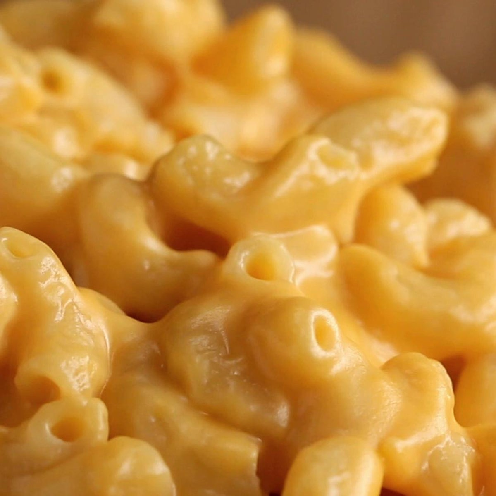

Slow Cooked Mac and Cheese

Slow Cooked Mac and Cheese. This has always been a comfort food for me. Its easy to make and wont cost you as much
compared to other recipes. Slow cooker would be preferable but standard pot can work as well.
This dish is great for big dinners or potlucks. Also can be used for sides for lunches and pre made dinners for the week
- Elbow Macaroni
- Shredded Cheddar Cheese
- Milk
- Salt
- In a large pot lightly salted water and bring to a rolling boil. Stir in macaroni and return to a boil. Cook pasta uncovered,
stirring occasionally, until tender yet firm to the bite, about 8 minutes.
- Drain and transfer pasta to a slow cooker.
Add milk and season with salt. Sprinkle about 1/2 of the cheddar cheese over pasta and stir.
- Sprinkle the top with the remaining half of the cheddar cheese and cook on low for 3 hours
- Serve hot with pepper or garnish and enjoy